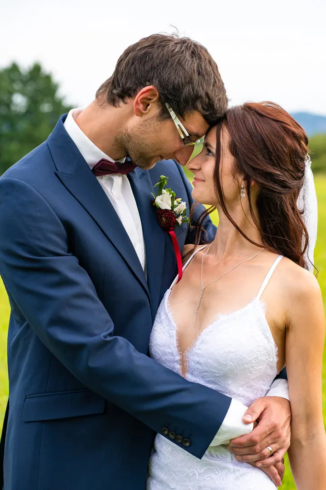
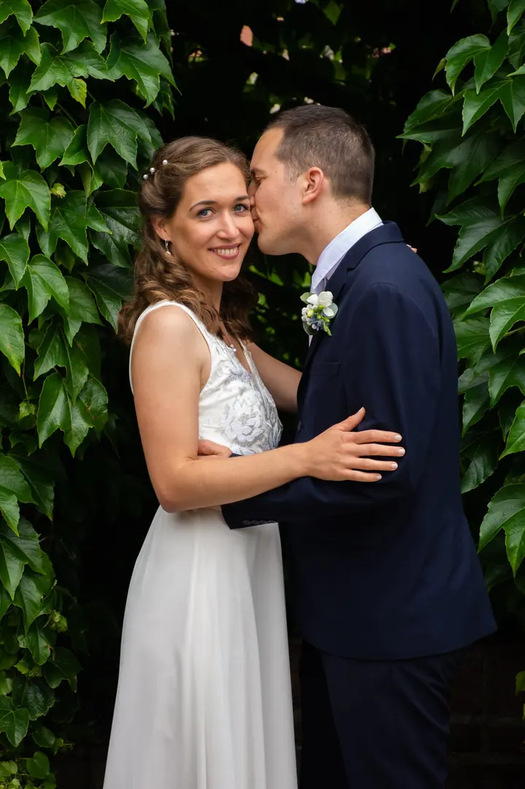
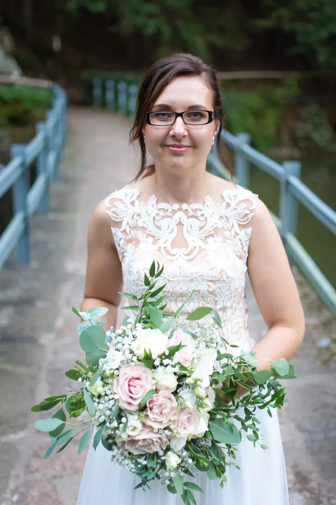
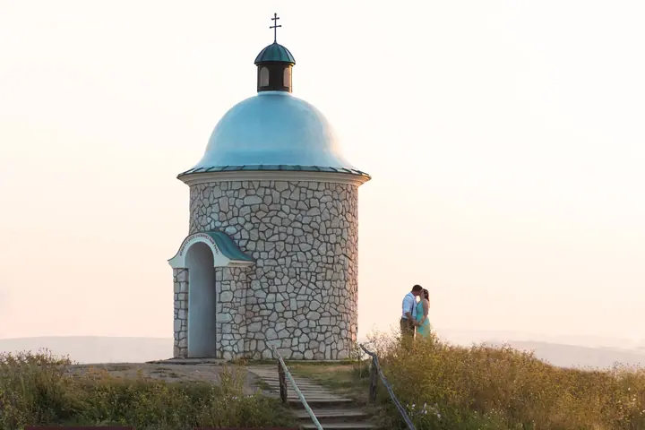
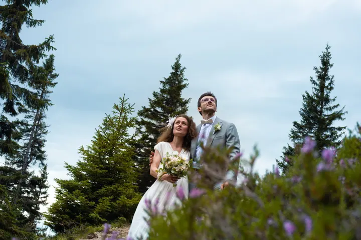

jedna
Svatební fotografie
Fotím celý váš svatební den tak, jak opravdu je: s radostí, láskou, slzami i emocemi. Od příprav nevěsty přes obřad až po společné focení při západu slunce.


Jmenuji se Michal Zapletal a fotím svatby. Zachycuji všechno tak, jak to je: radost, smích i slzy a také drobné detaily, na které by se jinak zapomnělo. Ve fotkách pak najdete den, jaký jste opravdu prožili.
Více o mně
Co fotím
jedna
Fotím celý váš svatební den tak, jak opravdu je: s radostí, láskou, slzami i emocemi. Od příprav nevěsty přes obřad až po společné focení při západu slunce.

S radostí, láskou, se slzami a emocemi

Za objektivem
Jmenuji se Michal Zapletal a svatby fotím pod názvem Fotím s láskou. Ten název není náhoda. Fotím a zachycuji vše tak, jak to je, s radostí, láskou, se slzami a emocemi. Nic nehraju a nic nepřikrášluji, protože samotný život je překrásný i bez toho.
Na svatbě mě zajímají lidé a chvíle mezi nimi. Klidné ráno, kdy se nevěsta líčí, první pohled, objetí s rodiči i smích ve chvíli, kdy to nikdo nečeká. Rád si všímám i maličkostí, třeba prstýnků položených na květu nebo na větvičce.
Nejraději fotím venku, v přírodě a ve světle zapadajícího slunce. Na společné focení vás vezmu na louku, do vinohradu nebo mezi stromy, kde se můžete na chvíli zastavit a být jen spolu.
Michal
Napíšete mi nebo zavoláte a domluvíme se, jestli mám ve vašem termínu volno. Rád vás poznám a poslechnu si, jakou svatbu chystáte.
Před svatbou spolu projdeme harmonogram a místa, kde se bude fotit. Probereme i to, kdy a kde vyrazíme na společné focení.
Jsem s vámi od příprav až po večer. Fotím nenápadně a nechávám věci plynout, aby fotky zůstaly opravdové.
Snímky pečlivě vyberu a upravím a pošlu vám je v online galerii, odkud si je snadno stáhnete a pošlete rodině.
Portfolio
Otázky
Fotím hlavně v okolí Trutnova, ale za svatbou rád přijedu i jinam. Stačí mi napsat, kde se budete brát.
Vůbec ne. Většinu dne fotím tak, jak se věci opravdu dějí. Při společném focení vám poradím, kam se postavit, a zbytek necháme na vás dvou.
Ano. Rád fotím přípravy nevěsty, líčení, kytici i prstýnky. Detaily ke svatebnímu dni patří a později se na ně krásně vzpomíná.
Cena záleží na délce dne a vašich přáních. Napište mi termín a místo a pošlu vám nabídku přímo na míru.
Napište pár vět o tom, co si představujete. · +420 737 020 215